Edge Strike
Deals Physical DMG once to 1 enemy within 1 grid of the caster.
Skills
Two base classes branch into four lines, each promoting through seven tiers. Pick a class, then step any skill from Rare to Immortal — the values move, and take the colour of the quality you are on.
Tier 1 · 26 skills, 19 with per-quality values
Deals Physical DMG once to 1 enemy within 1 grid of the caster.
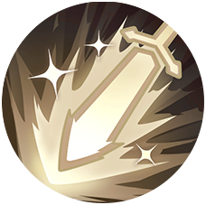
Attacks 1 enemy within 1 grid of the caster, dealing Physical DMG once and knocking them airborne (Prioritizes large targets)
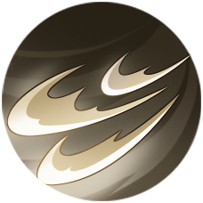
Deals Physical DMG 3 times to 1 enemy within 1 grid of the caster.
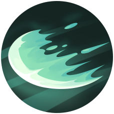
Deals Wind DMG once to all enemies in a 1×4 grid area in front of the caster, with a 50% base chance to knock them back by 1 grid.
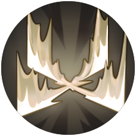
Deals Physical DMG once to all enemies within 1 grid of the caster.
Deals Physical DMG 4 times to all enemies within a 1-grid square area of the caster.
Leaps to any empty space within 3 grids of the caster, dealing Physical DMG once to all enemies within 1 grid of the caster, with a 50% base chance to inflict Armor Break 2 for 2 turns.
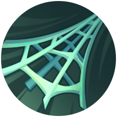
Selects a grid within 7 grids of the caster. Deals Wind DMG once to all enemies within a 1-grid square area of the target grid and pulls them to the caster's location.
Increases the caster's Block Rate and Block Efficiency for 3 turns. (Zero Initial CD)
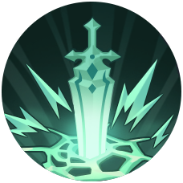
Selects a grid within 4 grids of the caster. Deals Wind DMG once to all enemies within 1 grid of the target grid.
Increases the caster's Crit Rate and Crit DMG for 4 turns. (Zero Initial CD)
Deals Physical DMG once to all enemies within 2 grids of the caster, knocking them airborne, with a 60% base chance to knock them back by 1 grid.
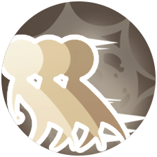
Deals Physical DMG once to 1 enemy within 1 grid of the caster, then moves back 3 grids.
Increases the caster's Crit Rate.
Increases the caster's DEF.
Flat-stat passive — scales with character level, not with quality.
Increases the caster's HP.
Flat-stat passive — scales with character level, not with quality.
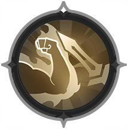
Increases the caster's Block Rate.
Increases the caster's SPD.
Flat-stat passive — scales with character level, not with quality.
Increases the caster's ATK.
Flat-stat passive — scales with character level, not with quality.
Increases the caster's Physical Mastery.
Flat-stat passive — scales with character level, not with quality.
When damaged by an enemy's Technique within 2 grids of the caster, there is a 50% chance to counterattack, dealing Physical DMG once to the attacker.
No per-quality values in the config for this one.
In battle, each time the caster's HP drops below 50%, grants a shield to the caster based on DEF.
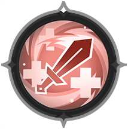
Each time a Technique deals DMG to an enemy, triggers a Lifesteal effect, up to 50% of the caster's max HP.
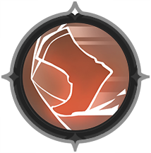
Increase the caster's SPD for each enemy unit killed. Stacks up to 4 times.
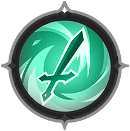
Each time the caster's Technique deals DMG to an enemy, there's a 40% chance to trigger Sword Gale that deals additional Wind DMG once.
No per-quality values in the config for this one.
Before battle starts, increases the DEF of all allied characters within a 3-grid square area of the caster by a percentage of the caster's own DEF. This effect is unique and cannot be dispelled.
Tier 1 · 26 skills, 16 with per-quality values
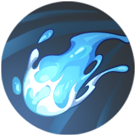
Deals Water DMG once to 1 enemy within 4 grids of the caster.
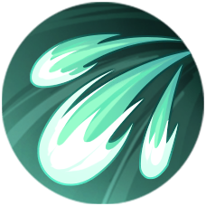
Deals Wind DMG 5 times to 1 enemy within 3 to 5 grids of the caster.
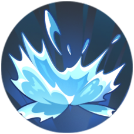
Deals Water DMG once to all enemies in a 3×4 grid area in front of the caster. DMG decreases by 25% for each subsequent hit on the same target. (Large targets may take multiple hits.)
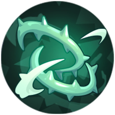
Selects a grid within 3 grids of the caster. Deals Wind DMG once to all enemies within 1 grid of the target grid, with a 30% base chance to inflict Immobilize for 1 turn.
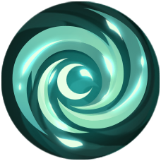
Selects a grid within 6 grids of the caster. Deals Wind DMG once to all enemies within 2 grids of the target grid, knocking them airborne and pulling them to the target grid.
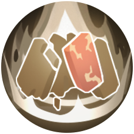
Summons a Stonechief in front of the caster that immediately acts. The summon inherits a percentage of the caster's stats and remains for up to 5 turns. (Zero Initial CD)
Heals an ally with the lowest HP percentage within 7 grids of the caster once and dispels 1 random ailment or debuff from the target.
Selects a grid within 5 grids of the caster. Deals Fire DMG once to all enemies within a 1-grid square area of the target grid.
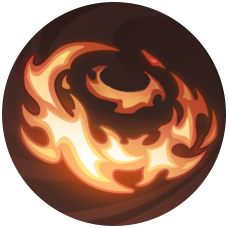
Deals Fire DMG once to all enemies within 2 grids of the caster.
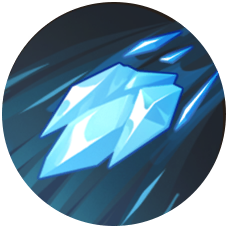
Deals Water DMG once to all enemies in a 1×5 grid area in front of the caster, with a 40% base chance to inflict Frozen for 1 turn.
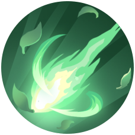
Selects a grid within 6 grids of the caster. Launches 7 waves of wind blades at random enemies on the target grid and within 1 grid to its left and right. Each wave deals Wind DMG once to all enemies within 1 grid of the enemy target. DMG decreases by 35% for each subsequent hit on the same target.
Selects a grid within 4 grids of the caster. Increases max HP of all allied characters within 2 grids of the target grid by a percentage of the caster's Max HP for 3 turns. This effect is unique. If the target's HP is below 30%, additionally performs a 5% healing. (Casts once before battle starts.)
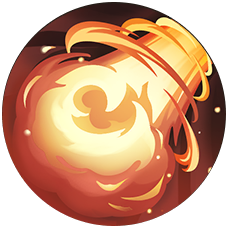
Deals Fire DMG 3 times to all enemies in a 1×3 grid area in front of the caster.
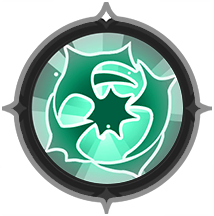
When the caster's Technique deals DMG to an enemy, there's a 25% chance to trigger Aura, dealing additional Wind DMG once, with a 60% base chance to knock them back by 1 grid.
No per-quality values in the config for this one.
Grants a shield based on the caster's max HP before battle starts. When the shield disappears, deals Wind DMG once to all enemies within a 1-grid square area of the caster, with a 100% base chance to knock them back by 1 grid.
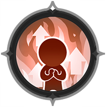
Increases the caster's Fire Affinity.
Flat-stat passive — scales with character level, not with quality.
Increases the caster's Water Affinity.
Flat-stat passive — scales with character level, not with quality.
Increases the caster's Wind Affinity.
Flat-stat passive — scales with character level, not with quality.
Increases the caster's HP.
Flat-stat passive — scales with character level, not with quality.
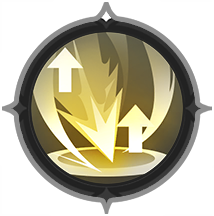
Increases the caster's Crit Rate.
Increases the caster's Elemental Mastery.
Flat-stat passive — scales with character level, not with quality.
Increases the caster's Effect Hit Rate.
Flat-stat passive — scales with character level, not with quality.
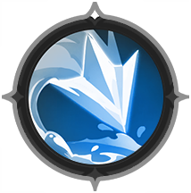
When the caster's Technique deals Water DMG to an enemy, there's a 50% chance to trigger Condensation, dealing additional Water DMG once, with a 30% base chance to inflict Frozen for 1 turn.
No per-quality values in the config for this one.
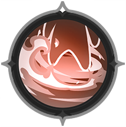
When the caster starts to move in their turn, there is a 30% chance to inflict Burn to grids within 1 grid of the caster.
No per-quality values in the config for this one.
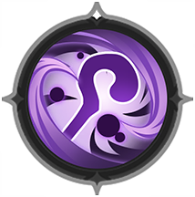
For each ailment or debuff the target carries, Technique DMG dealt by the caster to that target increases. Stacks up to 3 times.
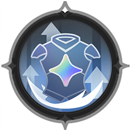
Increases the caster's Elemental RES.
Flat-stat passive — scales with character level, not with quality.
Tier 2 · promotes from Warrior · 11 skills, 9 with per-quality values
Attacks 1 enemy within 1 grid of the caster, dealing Physical DMG once, with a 40% base chance to inflict Stun for 1 turn.
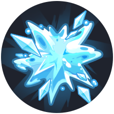
Deals Water DMG once to all enemies within a 1-grid square area of the caster.
Grants the caster a shield based on their DEF for 2 turns. (Zero Initial CD)
Deals Physical DMG once to 1 enemy within 3 grids of the caster, then bounces to another random enemy within 3 grids up to 3 times. 30% base chance to inflict Stun for 1 turn when dealing damage. (Large targets may take multiple hits.)
Deals Physical DMG once to all enemies within 3 grids of the caster, with an 85% chance to inflict Taunt for 1 turn, increasing to 100% against non-character units. (Casts once before battle starts.)
Grants a DMG Boost to all allied characters within 5 grids of the caster for 2 turns and dispels 1 random ailment or debuff. (Casts once before battle starts.)
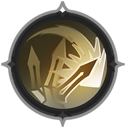
Each time the caster takes Technique DMG, increases the DMG of the caster's next Technique attack. This effect can stack up to 10 times.
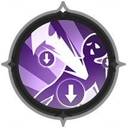
Increases the Sunder Efficiency of the caster's skills. Additionally, deals increased Technique DMG to enemies affected by ailments or debuffs.
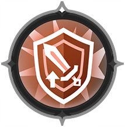
Grants an ATK boost when the caster is shielded.
Each time the caster blocks an enemy's Technique attack, deals Physical DMG once to the attacker based on the caster's DEF.
No per-quality values in the config for this one.
When the caster's shield is fully broken, deals Water DMG once to all enemies within 2 grids of the caster, with a 100% base chance to inflict 3 stacks of Cold for 2 turns.
No per-quality values in the config for this one.
Tier 2 · promotes from Warrior · 11 skills, 10 with per-quality values
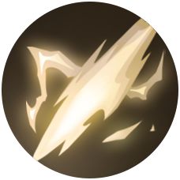
Dashes 5 grids in a straight line, dealing Physical Doom DMG once to all enemies in a 1×4 grid area along the path. (Cannot penetrate enemies larger than 4 grids)
Deals Fire Doom DMG once to all enemies in a 3×2 grid area in front of the caster.
Attacks 1 enemy within 1 grid of the caster, dealing Fire DMG once and inflicting Sigil. (Prioritizes large targets)
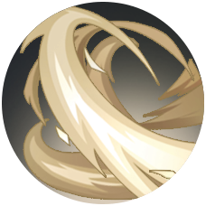
Deals Physical DMG 5 times to all enemies in a 3×2 grid area in front of the caster.
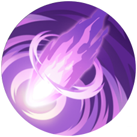
Leaps to any empty grid within 5 grids of the caster. Deals Dark DMG once to 1 enemy within 1 grid of the caster and randomly dispels 1 buff. (Prioritizes large targets)
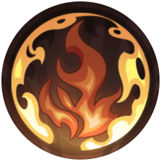
Grants Flame to the caster and 3 random allies within 3 grids of the caster for 2 turns. This effect cannot be dispelled.
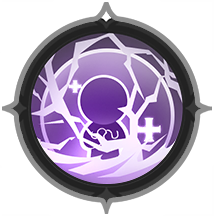
Upon taking lethal DMG for the first time, survives with 1 HP, enters the Indomitable status for 2 turns (cannot be dispelled), and heals the caster once.
No per-quality values in the config for this one.
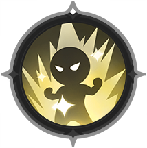
Increase the caster's DMG dealt for every 4 Techniques used. Stacks up to 3 times.
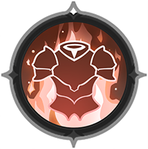
Reduces the caster's DMG taken for every 15% HP lost. This effect stacks up to 5 times and cannot be dispelled.
Increases the caster's Crit DMG.
Increases the caster's healing received for every 15% HP lost. This effect stacks up to 5 times and cannot be dispelled.
Tier 2 · promotes from Mage · 11 skills, 8 with per-quality values
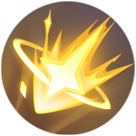
Selects a grid within 6 grids of the caster. Deals Light DMG once to all enemies within 1 grid of the target grid and dispels 1 random buff from them.
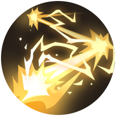
Deals Light DMG once to 1 enemy within 4 grids of the caster. The effect then chains to 1 random enemy within 4 grids of the target, up to 8 times. Each enemy can only be hit once by the chain effect.
Deals Fire Doom DMG twice to all enemies within a 3-grid circular area of the caster.
Selects a grid within 3 grids of the caster. Deals Water DMG once to all enemies within a 1-grid square area of the target grid, with a 30% base chance to inflict Frozen for 1 turn.
Your next damaging Technique gains increased Accuracy and deals 50% more DMG.
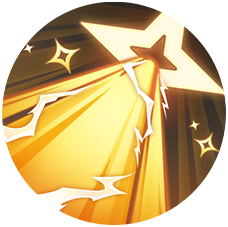
Deals Light Doom DMG twice to all enemies in a 1×8 grid area in front of the caster.
Each time the caster's Technique deals DMG to an enemy, there's a 30% chance to trigger Thunder Strike that deals additional Light DMG once.
No per-quality values in the config for this one.
When the caster's HP drops below 50% for the first time in a battle, grants a shield to the caster based on max HP for 2 turns and Dodge for 2 turns (cannot be dispelled).
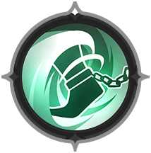
Whenever Wind DMG is dealt 3 times to an enemy with Techniques, there is a 30% chance to deal additional Wind DMG once and a 50% base chance to delay the target‘s action by 20%.
No per-quality values in the config for this one.
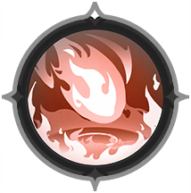
Has a 20% chance to inflict Burn to grids within range when casting a Fire Technique.
No per-quality values in the config for this one.
For each element among equipped Techniques that deal DMG, increases the caster's Elemental Mastery. Stacks up to 4 times.
Tier 2 · promotes from Mage · 11 skills, 7 with per-quality values
Heals all allies within 4 grids of the caster once.
Summons 1 Treantling behind the caster that immediately acts. The summon inherits a percentage of the caster's stats, starts in Stealth, and remains for up to 5 turns. (Zero Initial CD)
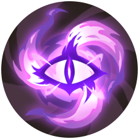
Selects a grid within 3 grids of the caster. Deals Dark DMG once to all enemies within 2 grids of the target grid, with a 50% base chance to inflict Weakened 1 for 2 turns.
Summons 2 Flame Wolves in front of the caster that immediately acts. The summon inherits a percentage of the caster's stats, starts in Stealth, and remains for up to 2 turns. (Zero Initial CD)
Selects a grid within 3 grids of the caster. Deals Dark DMG once to all enemies within 2 grids of the target grid. If the enemy target carries Erosion, triggers Erosion effect twice immediately.
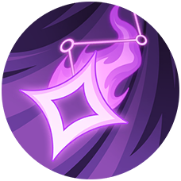
Attacks 1 enemy within 4 grids of the caster, dealing Dark DMG once, with a 50% base chance to inflict Erosion.
Enhances the caster's healing effects.
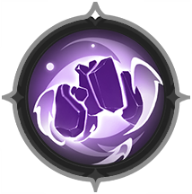
When the caster's summon dies or expires, deals Dark DMG once to all enemies within 2 grids of it.
No per-quality values in the config for this one.
When an allied adventurer dies, immediately revives and heals them once, granting Revitalization for 2 turns (cannot be dispelled). This Charm can only trigger once per battle. Before battle starts, if multiple allied adventurers are dead, reviving the one with the highest Power first.
No per-quality values in the config for this one.
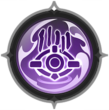
Each time the caster's Technique deals Dark DMG to an enemy, there is a 40% base chance to inflict Erosion.
No per-quality values in the config for this one.
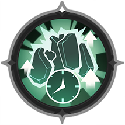
Increases the ATK of the caster's summons but reduces their duration by 2 turns. (Summons last at least 1 turn; this Charm does not affect summons without a turn limit.)
No per-quality values in the config for this one.
Tier 3 · promotes from Knight · 10 skills, 8 with per-quality values
Deals Water DMG once to all enemies within 5 grids of the caster, with a 50% base chance to inflict 1 stack of Cold for 2 turns and pulls them to the caster's location.
Grants a shield based on the caster's DEF to the ally with the lowest HP percentage within 3 grids of the caster, lasting for 3 turns.
Deals Physical DMG once to 1 enemy within 1 grid of the caster. (Prioritizes large targets)
Charges in a straight line for 5 grids. Deals Physical DMG once to all enemies in a 3×4 grid area along the path, with a 100% base chance to knock them back 1 grid to either side.
Deals Light Doom DMG once to all enemies in a 1×5 grid area in front of the caster and dispels 1 random buff from them.
Reduces the caster's DMG taken for 1 turn for every 1 instances of Technique DMG the caster takes. This effect can stack up to 9 times.
While shielded, the caster reflects a percentage of DMG taken back to the attacker as Light DMG once for each Technique attack received.
Heals the caster once at the start of the caster's turn.
No per-quality values in the config for this one.
Upon taking lethal DMG for the first time, the caster survives with 1 HP, heals the caster once, and dispels all dispellable effects on the caster.
No per-quality values in the config for this one.
Increases the caster's Block Efficiency.
Tier 3 · promotes from Duelist · 10 skills, 8 with per-quality values
The caster's next damaging Technique deals Doom DMG with a DMG boost.
Deals Physical DMG 6 times to 1 enemy within 1 grid of the caster. (Prioritizes large targets)
Leaps to any empty space within 5 grids of the caster, dealing Dark DMG once to all enemies within 2 grids of the caster, knocking them airborne, with a 50% base chance to inflict Armor Break 2 for 2 turns.
Selects a grid within 4 grids of the caster. Pulls all enemies within a 1-grid square area of the target grid to the grid in front of the caster, then deals Physical DMG 3 times to all enemies in a 3×3 grid area in front of the caster and knocks them airborne.
Increases Movement by 2 grids and SPD by a percentage of the caster's Speed for all allied characters within 3 grids of the caster for 2 turns. This effect is unique. (Casts once before battle starts.)
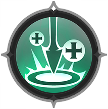
Heals the caster once each time the caster's Technique deals Crit DMG to an enemy.
No per-quality values in the config for this one.
The caster's Single-Hit Techniques deal increased DMG. Killing an enemy deals additional Fire True DMG once to all enemies within 2 grids of the target grid where DMG is dealt, equal to 60% of overkill DMG.
Increase the caster's DMG dealt for every 15% HP lost. This effect stacks up to 5 times and cannot be dispelled.
Each time the caster's Technique deals DMG to an enemy, inflicts 1 stack of Mark on them. When Mark stacks to 10, deals Physical DMG once to the target.
No per-quality values in the config for this one.
Before battle starts, consumes 50% of the caster's current HP to grant the caster a DMG Reduction effect. This effect cannot be dispelled.
Tier 3 · promotes from Sorcerer · 10 skills, 6 with per-quality values
Selects a target within 4 grids of the caster. Randomly deals Light DMG 16 times within 3 grids of the target, hitting at least 3 times. DMG decreases by 40% for each subsequent hit on the same target. (Prioritizes the skill range that contains large targets.)
Selects a grid within 5 grids of the caster. Deals Wind DMG 5 times to all enemies within 2 grids of the target grid, knocking them airborne.
Creates a vortex at a selected grid within 4 grids of the caster. The vortex deals Water DMG once to all enemies within 2 grids and pulls them to its center, with a 40% base chance to inflict Wet for 2 turns.
Selects a grid within 5 grids of the caster. Deals Fire DMG once to all enemies within a 1-grid square area of the target grid, with a 60% chance to inflict Burn on grids within range. (Prioritizes large targets)
Deals Fire DMG once to 1 enemy within 5 grids of the caster.
Increases the caster's Light Affinity.
Flat-stat passive — scales with character level, not with quality.
Has a 75% chance to trigger Repelling Wind when an enemy actively enters within 2 grids of the caster, dealing Wind DMG once, with a 100% base chance to knock them back 2 grids. (Triggers again if they approach repeatedly)
No per-quality values in the config for this one.
Each time the caster's Technique deals DMG to an enemy, there's a 50% chance to deal additional Light DMG once, with a 30% base chance to inflict Blind.
No per-quality values in the config for this one.
Increases the caster's Elemental Mastery. Before battle starts, reduces the CD of all Techniques by 1 turn. (Techniques already off cooldown are not affected.)
Flat-stat passive — scales with character level, not with quality.
At the end of the caster's turn, if no Technique was cast this turn, the caster enters the Icebound status, which reduces DMG taken and lasts until the start of the caster's next turn. This status heals the caster once before it expires.
Tier 3 · promotes from Sage · 10 skills, 6 with per-quality values
Selects a grid within 3 grids of the caster. Deals Dark DMG once to all enemies within 2 grids of the target grid, with a 50% base chance to inflict Slow 1 for 2 turns.
Selects a grid within 3 grids of the caster. Deals Dark DMG once to all enemies within 2 grids of the target grid with a 50% base chance to inflict Erosion.
Summons 1 Waterling behind the caster that immediately acts. The summon inherits a percentage of the caster's stats, starts in Stealth, and remains for up to 5 turns. (Zero Initial CD)
Deals Dark DMG once to 1 enemy within 3 grids of the caster. If the target carries Erosion, triggers all Erosion stacks immediately. (Prioritizes large targets)
Summons 1 Totem in front of the caster that immediately acts. The summon inherits a percentage of the caster's stats, starts in Stealth, and remains for up to 5 turns. (Zero Initial CD)
Increases the ATK of summons.
No per-quality values in the config for this one.
Increases the caster's Dark Affinity.
Flat-stat passive — scales with character level, not with quality.
Has a 30% chance to additionally heal all allies within 1 grid of the target each time the caster heals allies with a Technique.
No per-quality values in the config for this one.
Each time the caster inflicts Erosion on an enemy, there's a 60% chance to inflict Erosion again.
No per-quality values in the config for this one.
Upon taking lethal DMG for the first time, the caster survives with 1 HP and enters Shadow Form, lasting until the end of the caster's turn (up to 4 global turns). The effect cannot be dispelled. In this form, the caster is immune to all DMG, can't be healed, won't be the primary target of attacks, deals increased DMG, and reduces Technique CD by 2 turns. (The caster dies immediately if failing to win when Shadow Form ends, ignoring any effects that would preserve HP.)
Tier 4 · promotes from Paladin · 12 skills, 10 with per-quality values
Deals Water DMG once to all enemies within 2 grids of the caster.
Attacks 1 enemy within 1 grid of the caster, dealing Water DMG once and converting 20% of the DMG dealt into a shield (up to 50% of the caster's max HP) for the caster for 2 turns.
Creates 4 light swords around the caster. When attacked by Techniques, removes 1 sword to counterattack, dealing Light DMG once to all enemies within 1 grid of the attacker. (Casts before battle starts; Sword Formation counterattack counts as a Technique cast.)
Selects a grid within 4 grids of the caster. Deals Light DMG once to all enemies within 2 grids of the target grid, with an 85% base chance to inflict Taunt for 1 turn, increasing to 100% against non-character units.
Deals Light DMG once to all enemies in a 3×4 grid area in front of the caster. (Large targets may take multiple hits.)
Deals Water DMG once to all enemies within 3 grids of the caster, with a 40% base chance to knock them back by 1 grid towards the caster.
Before battle starts, converts 50% of the caster's current HP into a shield. Restores HP proportional to the remaining shield strength upon victory.
At the start of the caster's turn, grants Vigil to the allied adventurer with the lowest HP percentage, taking 50% of DMG for them. Reduces DMG taken from this effect, with an additional 1% reduction for every 1% the caster's DEF exceeds the protected unit's. This effect cannot be dispelled.
Enemies affected by Taunt deal reduced DMG to the caster.
Increases the caster's DEF. Increases the effectiveness of DEF-based shields granted by the caster.
Increases the caster's Water Affinity. Each time the caster's Technique deals Water DMG to an enemy, there is a 100% base chance to inflict 1 stack of Cold for 2 turns.
Flat-stat passive — scales with character level, not with quality.
When an enemy ends their turn within 2 grids of the caster, there is a 100% chance to trigger Frigid Aura, dealing Water DMG once, with a 50% base chance to inflict 1 stack of Cold for 2 turns.
No per-quality values in the config for this one.
Tier 4 · promotes from Berserker · 12 skills, 10 with per-quality values
At the start of each turn for 2 turns, heals the caster once and dispels 2 random ailment or debuffs.
Deals Wind DMG 3 times to all enemies in a 1×4 grid area in front of the caster.
Deals Dark DMG once to all enemies within 3×2 grid area in front of the caster, with a 10% Lifesteal effect.
Deals Fire DMG once to 1 enemy within 1 grid of the caster. If the target is not defeated, there is a 60% chance to cast this skill again. Can be cast up to 2 additional times per turn.
Leaps to an empty grid adjacent to an enemy target that is 2 grids from the caster, dealing Fire DMG once to that target. (Zero Initial CD)
Attacks all enemies within 2 grids of the caster, dealing Dark DMG once, with a 60% base chance to inflict Fear for 2 turns.
Each time the caster's Technique deals Crit DMG to an enemy, deals additional Fire DMG once to all enemies within 1 grid of the target.
No per-quality values in the config for this one.
Each time the caster's Technique deals DMG to an enemy, the caster ignores a portion of the target's DEF. The DEF ignorance increases by 10% for each buff the caster has, stacking up to 3 times.
Increase the caster's DMG dealt for every 15% HP lost of the target. Stacks up to 5 times.
Each time the caster's Technique deals DMG to an enemy, there's a 40% chance to summon 1 Wind Orb.
No per-quality values in the config for this one.
Reduces DMG taken during the caster's turn.
When there are 3 or fewer enemies within 2 grids, increases the caster's DMG dealt. When there are more than 3 enemies within 2 grids, reduces the caster's DMG taken.
Tier 4 · promotes from Archmage · 12 skills, 8 with per-quality values
Selects a grid within 5 grids of the caster. Deals Light DMG once to all enemies within 2 grids of the target grid, with a 30% base chance to inflict Blind.
Deals Water DMG 3 times to all enemies in a 3×5 grid area in front of the caster, with a 50% base chance to knock them back by 1 grid.
Selects a grid within 3 grids of the caster. Deals Wind DMG 3 times to all enemies within a 1-grid square area of the target grid, with a 40% base chance to inflict Laceration for 1 turn.
Increases ATK for all allied characters within 3 grids of the caster by a percentage of the caster's ATK for 2 turns. This effect is unique. Also there's a 50% chance to advance the action bar of allied characters by 20%. (Zero Initial CD)
Deals Light DMG 3 times to 1 enemy within 5 grids of the caster. (Prioritizes large targets)
Reduces direct DMG the caster takes from Techniques. Also boosts the caster's other DMG Reduction effects by an extra 20%. Lasts 3 turns. (Zero Initial CD)
Each time the caster's Technique deals Fire Crit DMG to an enemy, deals additional Fire DMG once to all enemies within 2 grids of the target.
No per-quality values in the config for this one.
When a target frozen by the caster removes the Frozen state, additionally deals Water DMG once.
No per-quality values in the config for this one.
Within a single turn, each time the caster loses over 15% of max HP, grants the caster a shield based on their max HP for 2 turns.
At the end of the caster's turn, if there are grounds inflicted with Burn within 2 grids of the caster, heals the caster once. Increases the healing power by 10% for each additional Burning grid in the area. Stacks up to 5 times.
No per-quality values in the config for this one.
Increases the caster's Wind Affinity. Each time the caster's Technique deals Wind DMG to an enemy, there is a 35% base chance to inflict Laceration for 1 turn.
Flat-stat passive — scales with character level, not with quality.
For every Fire Technique cast, increases the caster's Crit Rate for 2 turns. Stacks up to 8 times.
Tier 4 · promotes from Arcanist · 12 skills, 10 with per-quality values
Attacks 1 enemy within 3 grids of the caster, dealing Dark DMG once, with a 40% base chance to inflict Frenzy for 1 turn.
Grants Spirit Mark to the allied character with the lowest HP within 5 grids of the caster.
Summons 1 Rock Rex in front of the caster. The summon inherits a percentage of the caster's stats. (The Technique can only trigger once per battle.)
No per-quality values in the config for this one.
Heals an ally with the lowest HP percentage within 7 grids of the caster once. If the target's HP is below 50%, this healing effect is increased by 20%.
Summons 1 Clone in front of the caster and connects it with 1 enemy. Whenever the Clone loses HP, the connected target loses the same amount of HP (True DMG). The Clone lasts 3 turns, inherits 60% of the target's DEF and a portion of its other stats, and is prioritized by allies as an attack target. (Zero Initial CD)
Deals Dark DMG 3 times to 1 enemy within 4 grids of the caster.
When taking DMG, if the attacker is affected by ailment or debuff, reduces DMG taken by the caster.
Grants an ATK boost when the caster has a summon on the battlefield.
When the caster's summon dies or expires, heals the caster once.
No per-quality values in the config for this one.
Increases the caster's healing effects. When a Technique's healing overflows, converts 100% of the overheal into a shield for the target, lasting 2 turns.
At the start of the caster's turn, grants Blessing to the allied character with the highest ATK, increasing their DMG. This effect lasts until the start of the caster's next turn and cannot be dispelled.
At the start of the caster's turn, the caster gains 1 random buff that lasts until the start of the caster's next turn.
Tier 5 · promotes from Guardian · 12 skills, 10 with per-quality values
Moves to any empty space within 4 grids of the caster, dealing Physical DMG once to 1 enemy within 1 grid of the caster, with an 85% base chance to inflict Taunt for 1 turn, increasing to 100% against non-character units. (Prioritizes large targets.)
Removes all shields to select a grid within 4 grids of the caster and deals Light DMG once to all enemies within a 1-grid square area around the target grid. DMG dealt is based on a percentage of the Shield Strength consumed.
Deals Light DMG once to all enemies within 3 grids of the caster. (Large targets may take multiple hits.)
Selects a grid within 3 grids of the caster. Deals Light DMG once to all enemies within a 1-grid square area of the target grid.
Enters the Sanctification state for 2 turns, reducing DMG taken by the caster and all allied characters within 4 grids of the caster. The effect is unique and cannot be dispelled. (Zero Initial CD)
Deals Physical DMG twice to 1 enemy within 1 grid of the caster. (Prioritizes large targets)
Counterattack skills deal increased DMG.
Increases healing received. Instead of restoring HP, all healing is converted at a 1:1 ratio into a shield for 2 turns. When the shield disappears, any remaining shield strength is converted 1:1 back into HP.
Each time the caster blocks an enemy's Technique DMG, there's a 100% base chance to inflict Sigil.
Each Light Technique cast grants 1 stack of Renewing Light. At 6 stacks, heals the caster once.
No per-quality values in the config for this one.
At the end of the caster's turn, if no Techniques were cast this turn, heals the caster once and increases DMG dealt next turn by 50%.
No per-quality values in the config for this one.
From the caster's 3rd turn onward, increases DMG dealt at the start of each turn. Stacks up to 3 times.
Tier 5 · promotes from Conqueror · 12 skills, 10 with per-quality values
Attacks 1 enemy within 1 grid of the caster, dealing Physical Doom DMG once, with an 80% base chance to inflict Armor Break 2 for 2 turns. (Prioritizes large targets)
Attacks all enemies within 2 grids of the caster, dealing Dark DMG once, with a 80% base chance to inflict Blood Source for 1 turn.
Attacks 1 enemy within 1 grid of the caster, dealing Physical DMG 3 times, with a 60% base chance to inflict 1 stack of Riven Heart for 1 turn. Stacks up to 3 times. (Prioritizes large targets)
Deals Fire DMG 3 times to all enemies within a 1-grid square area around the caster, then deals Fire DMG once to all enemies within a 2-grid circular area around the caster. (Zero Initial CD)
Selects a grid within 4 grids of the caster. Deals Wind DMG once to all enemies within 2 grids of the target grid, with a 30% base chance to inflict Slow 2 for 2 turns.
Teleports to an empty grid adjacent to 1 enemy within 5 grids of the caster. Deals Dark DMG once to the target. Killing the target triggers this skill again. Can be cast up to 4 additional times per turn.
Increase DMG dealt by the caster's Wind Orbs. Each time a Wind Orb is generated, there's a 70% chance to generate another, up to 4 times per turn.
Each time the caster's Technique deals Crit DMG to an enemy, causes additional Wind DMG once.
No per-quality values in the config for this one.
Deals increased Technique DMG to targets above 70% HP.
Within a single turn, each time the caster loses over 10% of max HP, reduces DMG taken and increases SPD for 2 turns. Stacks up to 5 times.
After actively moving, deals Fire DMG once to all enemies within 1 grid of the caster.
No per-quality values in the config for this one.
Each Technique cast grants a stack of Battle Zeal and increases the caster's ATK. At 6 stacks, Battle Zeal converts to Scarlet Zeal, greatly increasing the caster's ATK for 2 turns. (Battle Zeal doesn't stack while Scarlet Zeal is active.)
Tier 5 · promotes from Destroyer · 12 skills, 7 with per-quality values
Places 2 Blast Spirits in front of the caster. They remain on the battlefield for up to 3 turns. (Zero Initial CD)
Deals Water DMG twice to all enemies in a 3×3 grid area in front of the caster, with a 30% base chance to inflict Frozen for 1 turn.
Deals Fire Doom DMG 3 times to all enemies in a 3×3 grid area in front of the caster.
Selects a grid within 5 grids of the caster. Deals Wind DMG 3 times to all enemies within 3 grids of the target grid with a 35% base chance to knock them back by 1 grid towards the center of the battlefield.
Deals Light DMG once to 1 enemy within 4 grids of the caster. Each instance of damage can chain to 2 random enemies within 4 grids of the target, up to 2 times. Each enemy can only be hit once by the same chain.
Deals Wind DMG twice to 1 enemy within 3 to 5 grids of the caster.
Increases the caster's Water Affinity. When attacked, there's a 70% base chance to inflict Wet on the attacker for 2 turns.
Flat-stat passive — scales with character level, not with quality.
When an enemy within 5 grids of the caster casts a Technique, there's a 50% chance to trigger Thunder Strike, dealing Light DMG once. The chance increases to 100% if the target is inflicted with Electro or Wet.
No per-quality values in the config for this one.
Each time the caster's Technique deals Light DMG to an enemy, there is a 65% base chance to inflict Electro.
No per-quality values in the config for this one.
Increases the caster's DMG RES. When taking Technique DMG, there's a 50% chance to teleport to any empty grid within 4 grids of the caster. Can trigger only once per turn.
Increases the caster's Fire Affinity. Killing an enemy has a 30% chance to place 1 Blast Spirit on the spot.
Flat-stat passive — scales with character level, not with quality.
At the start of the caster's turn, gains 1 stack of Rhythm if the caster's HP is above 30%. This effect stacks up to 5 times and cannot be dispelled.
No per-quality values in the config for this one.
Tier 5 · promotes from Dominator · 12 skills, 6 with per-quality values
Summons 1 Thalasson next to the caster that immediately acts. The summon inherits a percentage of the caster's stats. (The Technique can only trigger once per battle.)
No per-quality values in the config for this one.
Deals Dark DMG twice to 1 enemy within 3 grids of the caster. For every 5% HP lost by the target, this skill deals 5% more DMG, up to a max of 50% increase. (Prioritizes large targets)
Selects a grid within 3 grids of the caster. Deals Dark DMG once to all enemies within 2 grids of the target grid. For each type of debuff the target carries, deals additional Dark DMG once, up to 3 times.
Deals Dark DMG once to all enemies within a 1×4 grid area in front of the caster, with a 70% base chance to inflict 1 random debuff (Weakened 2, Armor Break 2, or Slow 2) for 2 turns.
Heals an ally within 6 grids of the caster once. The effect then chains to 1 random ally within 6 grids of the target, up to 5 times. Repeated healing on the same target is diminished by 35% per instance.
Creates a magic rune that lasts 2 turns. When an enemy within 5 grids casts a Technique, the rune deals Dark DMG once to them. If the target carries Erosion, triggers the Erosion effect once. (Zero Initial CD)
Upon casting a summoning Technique, consumes 2% of the caster's max HP to increase the summon's HP. Restores all HP consumed by this Charm if the caster survives until victory.
No per-quality values in the config for this one.
When 3 of the caster's summons die or disappear, summons 1 Infernal Fiend in front of the caster that immediately acts. The summon inherits a percentage of the caster's stats. (The Charm can only trigger once per battle.)
No per-quality values in the config for this one.
Increases the caster's Dark Affinity. Killing an enemy deals additional Dark DMG once to all enemies within 1 grid of the target grid where DMG is dealt.
Flat-stat passive — scales with character level, not with quality.
At the start of the caster's turn, reduces Effect RES of all enemies within 5 grids of the caster. This effect is unique. Also there's a 50% base chance to inflict Vulnerability for 1 turn.
Carries 3 potions at the start of battle. When an allied character's HP falls below 50%, uses a potion to heal them. Produces 1 potion every 3 turns, holding up to 5 at a time.
No per-quality values in the config for this one.
Each time the caster takes Technique DMG, there's a 50% base chance to inflict Erosion on the attacker.
No per-quality values in the config for this one.
Tier 6 · promotes from Templar · 12 skills, 9 with per-quality values
Attacks 1 enemy within 1 grid of the caster, dealing Physical Doom DMG once, with an 150% base chance to inflict Stun for 1 turn. (Prioritizes large targets)
The caster gains Prism Aegis for 2 turns, which cannot be dispelled. When hit by Technique DMG, the caster counterattacks and deals Light DMG once based on DEF to the attacker. (Zero Initial CD)
Deals Light DMG once to 1 enemy within 3 grids of the caster, then ricochets to a random enemy within 3 grids of the target up to 5 times. If the caster has at least 5 stacks of Charge, remove 5 stacks to increase the DMG of this skill by 50%. DMG decreases by 40% for each subsequent hit on the same target. (Large targets may take multiple hits.)
Deals Water DMG 2 times to all enemies within 4 grids of the caster, with a 50% base chance to inflict 1 stack of Cold for 2 turns and pulls them to the target's location.
Deals Water DMG once to all enemies within 3 grids of the caster.
Grants a shield based on the caster's DEF to the caster and the ally with the lowest HP percentage within 5 grids, lasting for 2 turns.
Increases the caster's Physical Mastery. Each time the caster's Technique deals Physical DMG to an enemy, there is a 70% base chance to inflict 1 stack of Cripple for 2 turns, up to 3 stacks.
Flat-stat passive — scales with character level, not with quality.
Increases Light Affinity. At the end of the caster's turn, gains 2 stacks of Charge, up to 20 stacks. Cannot be dispelled.
Flat-stat passive — scales with character level, not with quality.
For each equipped Technique deals Light DMG, reduces DMG taken, up to 3 stacks. Cannot be dispelled.
Before battle starts, awakens the caster's power. The caster and all allied characters within 5 grids take reduced DMG from enemies inflicteded with Cold. Each stack of Cold on the target increases this reduction by 20%. This effect is Unique and cannot be dispelled.
Each time the caster takes Technique DMG, gains 1 Tide Sigil. At 15 stacks, counterattacks and deals Water DMG once based on DEF to all enemies within 2 grids of the caster.
No per-quality values in the config for this one.
Increase the caster's DEF for every 10% HP lost. This effect stacks up to 5 times and cannot be dispelled.
Tier 6 · promotes from Ravager · 12 skills, 10 with per-quality values
Deals Physical DMG 4 times to all enemies in a 3×2 area in front of the caster. For every 5% the caster's SPD exceeds the target's, this skill deals 5% more DMG to that target, up to 50%.
The caster launches 6 attacks. Each attack, the caster, teleports to an empty space adjacent to a random enemy within 3 grids of the caster and deals Physical DMG once. DMG decreases by 50% for each subsequent hit on the same target.
Leaps to any empty space within 3 grids of the caster, dealing Dark DMG once to all enemies within 2 grid of the caster, with a 50% base chance to inflict Weakened 1 for 2 turns, then pulls them to the caster.
Deals Fire DMG once to all enemies in a 1×3 grid area in front of the caster, with a 40% base chance to knock them back by 1 grid. DMG decreases by 40% for each subsequent hit on the same target. (Large targets may take multiple hits.)
Applies a Hex Mark to 1 enemy within 1 grid for 1 turn. Cannot be dispelled. The caster deals increased DMG to that target. When Hex Mark expires, the target takes 1 extra instance of Physical True DMG, equal to 30% of the HP DMG dealt to it during the mark's duration, excluding True DMG. (Prioritizes large targets. A target can only have 1 Hex Mark at a time)
Deals Fire Doom DMG once to all enemies in a 3×1 grid area in front of the caster.
Each time the caster's Technique deals DMG to an enemy, there's a 40% chance to deal additional Physical DMG once. For every 5% HP lost by the target, this skill deals 5% more DMG, up to 50%.
No per-quality values in the config for this one.
Increases the caster's Physical Mastery. Each time the caster's Technique deals Physical DMG to an enemy, there is an 80% chance to grant the caster 1 stack of Razor until the end of your turn, up to 20 stacks.
Flat-stat passive — scales with character level, not with quality.
For each Wind Orb the caster has, Technique DMG increases, up to 10 stacks. Cannot be dispelled.
The caster's Single-Hit Techniques deal more DMG. For each type of Ailment or Debuff on the target, this effect increases by 10%, stacking up 5 times.
Before battle starts, the caster enters Overdrive for 3 turns. Cannot be dispelled. During this state, DMG dealt is increased. When Overdrive ends, the caster enters Exhausted for 3 turns. Cannot be dispelled. While Exhausted, DMG taken increases by 100%.
For each type of Ailment or Debuff on the caster, reduce DMG taken, stacking up to 5 times. Cannot be dispelled.
Tier 6 · promotes from Magister · 12 skills, 10 with per-quality values
Selects a grid within 3 grids of the caster. Deals Water DMG once to all enemies within 2 grids of the target grid, with a 40% base chance to inflict Wet for 2 turns.
Selects a grid within 4 grids of the caster. Deals Water DMG once to all enemies within a 1-grid square area of the target grid, with a 30% base chance to inflict Frozen for 1 turn. (Zero Initial CD)
Selects a grid within 5 grids of the caster. Deals Fire DMG once to all enemies within a 1-grid square area of the target grid, and inflict Burn on grids within range.(Prioritizes large targets)
Selects 1 grid within 5 grids. Absorbs all allied Burn effects within 3 grids, then deals Fire Doom DMG once to all enemies within 1 grid. DMG increases by 10% for each Burn absorbed, up to 100%. (Prioritizes large targets)
Selects a grid within 5 grids of the caster. Deals Wind DMG 4 times to all enemies within 1 grids of the target grid, knocking them airborne.
Deals Light DMG 9 times to randomenemies within 5 grids of the casters. DMG decreases by 30% for each subsequent hit on the same target.
Increase the caster's Elemental RES. Each time the caster takes Technique DMG, there is a chance to trigger Surging Tide, and advance the action bar by 20%, up to 2 times per turn. The initial trigger chance is 0%, and each equipped skill that deals Water DMG increases it by 5%.
Flat-stat passive — scales with character level, not with quality.
After casting 5 Water Techniques, the caster enters Tideform for 2 turns. Cannot be dispelled. During this state, DMG dealt is increased. After each Technique cast, there is a 30% chance to reset its cooldown and cast again, up to 2 times per turn. (Techniques cast during Tideform do not count)
Every 3 turns, increase the DMG dealt by Blast Spirit of the casteronce, up to 2 times. Cannot be dispelled. The caster's Blast Spirit gains Enhanced Effect.
Whenever the caster uses a damaging Technique, conjures 1 matching elemental Rune next to the caster to increase the corresponding stat of the caster. Cannot be dispelled.
Increases Laceration DMG. When the caster's Technique sends an enemy from a normal state into Airborne, triggers Laceration once.
Increases Light Affinity. Each time the caster uses a Light Technique, gains 1 to 3 stacks of Energy at random. On every 4th Light Technique cast, removes all stacks of Energy and increases this Technique's DMG by 8% per stack. (The 4th cast does not grant Energy.)
Flat-stat passive — scales with character level, not with quality.
Tier 6 · promotes from Prophet · 12 skills, 8 with per-quality values
Summons 1 Phantom next to the caster that immediately acts. The summon inherits a percentage of the caster's stats. (The Technique can only trigger once per battle.)
No per-quality values in the config for this one.
Summons 1 Flamewyrm in front of the caster that immediately acts. The summon inherits a percentage of the caster's stats, starts in Stealth, and remains for up to 3 turns. (Zero Initial CD)
Heals all allies within 4 grids of the caster once and dispels 1 random ailment or debuff from them.
Selects a grid within 3 grids of the caster. Deals Dark DMG 2 times to all enemies within 2 grids of the target grid with a 50% base chance to inflict Erosion.(Zero Initial CD)
Deals Dark DMG 2 times to 1 enemy within 3 grids, with a 40% base chance to inflict Erosion.
Selects a grid within 3 grids of the caster. Deals Dark DMG once to all enemies within 2-grid cross area of the target grid, with a 50% base chance to inflict Weakened 1 for 2 turns.
Increase the caster's summon's ATK. At the start of the caster's turn, advances the action bar by 30% for the caster's 1 random summon within 5 grids of the caster.
No per-quality values in the config for this one.
At the end of the caster's summon's turn, deals Dark DMG once to all enemies within a 1-grid square area of that summon.
No per-quality values in the config for this one.
When healing an ally with a Technique, reduces DMG taken for that target for 1 turn. This effect is Unique.
Each time the caster's Technique inflicts a Debuff on an enemy, there is a 50% base chance to also inflict 1 stack of Erosion.
No per-quality values in the config for this one.
Reduces DMG taken of the caster. At the end of the caster's turn, immediately triggers 1 inflicted Erosion within 5 grids of the caster.
After casting 8 Dark Techniques, the caster enters Nether Pact for 2 turns. Cannot be dispelled. During this state, DMG dealt is increased, and all Technique DMG gains 10% Lifesteal. (Techniques cast during Nether Pact do not count)
Tier 7 · promotes from Justicar · 12 skills, 10 with per-quality values
Enters Counter Stance for 2 turns (Undispellable). When taking Technique DMG, there is a 30% chance to counterattack, dealing Physical DMG based on DEF to the attacker, with a 40% Base Chance to inflict Stun for 1 turn. (Zero Initial CD. Counter Stance ends after triggering).
Deals Physical DMG once to 1 enemy within 1 grid of the caster. Each time this skill is cast in battle, its DMG increases by 10%, up to 100%.
Deals Physical DMG 3 times to all enemies in a 3×1 grid area in front of the caster. The final hit has a 50% Base Chance to knock them back by 1 grid. For every 5% the caster's DEF exceeds the target's, this skill deals 5% more DMG to the target, up to 50%.
Deals Light DMG once to all enemies in a 1×4 grid area in front of the caster. Once the caster has 10+ stacks of Charge, consumes 10 stacks to cast this skill again, with a max of 1 additional cast per turn.
Deals Light DMG once to 1 enemy within 1 grid of the caster and gains 2 stacks of Charge.
Grants a Shield based on the caster's DEF for 2 turns. While shielded, taking Technique DMG has a 50% Base Chance to inflict 1 stack of Cold on the attacker for 2 turns.
Before battle starts, grants Solidarity to the caster and all allied characters within a 3-grid square area of the caster. This effect is unique and cannot be dispelled.
Increases the caster's Effect RES. When the caster is knocked back or pulled, there is a 50% chance to gain Invincibility, becoming immune to that movement effect.
Flat-stat passive — scales with character level, not with quality.
Each time the caster takes Technique DMG, increases DEF for 1 turn, stacking up to 10 times, with a 20% base chance to inflict Weakened 1 on the attacker for 2 turns.
Before battle starts, forms an undispellable Covenant with all allied Adventurers within 5 grids of the caster. When an allied Adventurer's HP first drops below 40%, the Covenant triggers for 1 turn. During this time, the caster intercepts enemy Technique DMG (True DMG) dealt to that allied Adventurer and takes reduced DMG.
At the start of battle, the caster gains 14 stacks of Charge. Consuming 2 stacks of Charge increases the caster's ATK for 2 turns, stacking up to 7 times.
Increases the caster's Water Affinity. Enemies ending their turn within 2 grids of the caster have a 100% base chance to be inflicted with 1 to 3 random stacks of Cold for 2 turns.
Flat-stat passive — scales with character level, not with quality.
Tier 7 · promotes from Marauder · 12 skills, 10 with per-quality values
Summons 4 Wind Orbs around the caster.
Selects a grid within 2 grids of the caster. Deals Physical DMG 4 times to all enemies within a 1-grid square area around the target grid.
Deals Physical DMG 6 times to all enemies within 2 grids of the caster.
Deals Dark DMG once to all enemies within 1 grid of the caster, with a 20% Lifesteal effect.
Teleports to an empty grid next to the enemy with the lowest HP percentage within 5 grids of the caster and deals Fire DMG once.
Deals Fire DMG once to the enemy with the lowest HP percentage within 1 grid of the caster. For every 10% HP lost by the target, this skill deals 20% more DMG, up to a max of 200% increase.
Increases the caster's SPD. At the end of the caster's turn, there is a 40% chance to randomly reduce the CD of 1 Technique still on cooldown by 1 turn.
Flat-stat passive — scales with character level, not with quality.
At the start of the caster's turn, the caster gains 2 stacks of Blade Soul, stacking up to 4 times. Cannot be dispelled.
Before battle starts, awakens the caster's power. Reduces DMG taken by the caster, with this effect increased by an additional 200% until the end of the caster's second turn.
At the end of the caster's turn, gains 1 stack of Umbra. Triggers at 2 stacks, heals the caster once, and then the caster enters Stealth for 1 turn. Cannot be dispelled. (Umbra stacks cannot be gained while in Stealth).
No per-quality values in the config for this one.
After actively moving, inflicts 1 stack of Shatter on all enemies within 1 grid of the caster for 1 turn, stacking up to 3 times.
At the start of the caster's turn, inflicts a Battle Zeal mark on the enemy that dealt the most DMG to the caster in the previous turn, lasting until the end of the caster's turn.
Tier 7 · promotes from Arcanarch · 12 skills, 7 with per-quality values
Attacks 1 enemy within 4 grids of the caster, dealing Water DMG once with a 30% base chance to inflict Frozen for 1 turn.
Deals Fire DMG once to all enemies within a 3-grid circular area around the caster, with a 40% chance to inflict Burn on grids within range.
Selects a grid within 5 grids of the caster. Deals Wind DMG 6 times to all enemies within 1 grid of the target grid, with an 80% base chance to inflict Laceration for 1 turn.
Deals Wind DMG 3 times to 1 enemy within 5 grids of the caster. If the target is within 3 grids of the caster, the caster retreats 1 grid.
Deals Light DMG once to all enemies in a 1×7 grid area in front of the caster. Starting with the 3rd hit, each subsequent hit against the same target deals 40% less DMG. (Large targets may take multiple hits.)
Randomly summons 8 Ball Lightnings in a 3×5 area in front of the caster. Upon landing, each Ball Lightning deals Light DMG and chains to 1 random enemy within 2 grids of the target grid. (Prioritizes the skill range that contains large targets.)
Each time the caster's Technique deals Water DMG to an enemy, there's a 50% chance to deal additional Water DMG once, with a 30% base chance to inflict Immobilize for 1 turn.
No per-quality values in the config for this one.
When taking lethal DMG for the first time, forces the caster to survive with 1 HP and enter the Immolation state. Simultaneously absorbs all allied Burn effects within 3 grids of the caster. For each Burn absorbed, grants the caster a Shield based on the caster's Max HP, lasting until Immolation ends.
For every allied Burn grid within 4 grids of the caster, increases the caster's Fire Affinity, stacking up to 10 times.
No per-quality values in the config for this one.
Increases the caster's Wind Affinity. Each time the caster's Technique deals DMG to an enemy, there is a 10% base chance to knock them back by 1 grid.
Flat-stat passive — scales with character level, not with quality.
Each time the caster's Technique deals DMG to an enemy, there's a 50% chance to deal additional Wind DMG once, with a 5% base chance to inflict 1 stack of Cripple for 2 turns, up to 3 stacks.
No per-quality values in the config for this one.
Increases the caster's Elemental Mastery. Up to 2 Runes of each element can exist simultaneously, with a maximum of 5 Runes active at once.
Flat-stat passive — scales with character level, not with quality.
Tier 7 · promotes from Hierarch · 12 skills, 9 with per-quality values
Summons 1 Flora behind the caster that immediately acts. The summon inherits a percentage of the caster's stats, starts in Stealth, and remains for up to 3 turns. (Zero Initial CD)
Summons 1 Wraithguard within 4 grids of the caster that immediately acts. The summon inherits a percentage of the caster's stats. (Can only be cast once per battle.)
No per-quality values in the config for this one.
Attacks 1 enemy within 4 grids of the caster, dealing Dark DMG once, with a 50% base chance to inflict Slow 1 for 2 turns. If the target carries Erosion, instantly triggers Erosion effect 12 times.
Selects a grid within 3 grids of the caster. Deals Dark DMG once to all enemies within 2 grids of the target grid, with a 50% base chance to inflict Ravenous Mark for 2 turns.
Deals Dark DMG once to 1 enemy within 3 grids of the caster and all enemies in a 1-grid square area around that target, then ricochets to 1 random enemy within 3 grids of that target, ricocheting up to 2 times. (Large targets may take multiple hits.)
Select a grid within 3 grids of the caster. Grants DMG Reduction to all allied characters within 3 grids of the target grid for 2 turns. This effect is unique, and can randomly dispel 1 Ailment or Debuff. (Can be cast while in Taunt or Frenzy.)
When a duration-limited Summon dies or expires, grants a Shield based on the caster's Max HP to 1 Summon with unlimited duration for 2 turns. (Only affects the caster's own Summons.)
In battle, the first Summon with unlimited duration created by the caster takes reduced DMG and deals increased DMG.
Increases the caster's Erosion DMG. Whenever a Technique deals Dark DMG to an enemy inflicted with Erosion, there is a 100% chance to immediately trigger Erosion once.
Whenever a Technique successfully inflicts a Debuff on enemies, there is a 50% chance to deal Dark DMG once to them.
No per-quality values in the config for this one.
Each Potion carried increases the caster's Healing effect. Potion brewing speed increases to 1 Potion every 2 turns for the caster, and Healing from the caster's Potions is increased by 50%.
At the start of the caster's 3rd turn, summons 1 Guardian Totem in front of the caster that immediately acts. This Summon inherits a portion of character stats. The Guardian Totem cannot take DMG from enemies and cannot be healed.
No per-quality values in the config for this one.
Where the numbers come from. Damage skills use their base coefficient times a rank scale
(level_prop_skill); buffs and debuffs read the status entity the skill points at through
ViewPropEntities, scaled by level_prop_status. Quality is a band of ranks, so each
step shows the value at the first rank of that quality. Coefficients are a percentage of ATK;
flat values are raw.
Descriptions are the game's own. All 328 are shown exactly as the client renders them, keeping its colour markup — element names in their element colour, and game keywords like grid or base chance highlighted. Fixed figures written into the text (chances, ranges, hit counts) are picked out in bold; those do not change with quality. The values that do change are the ones in the stat list, which take the colour of the quality you have selected.
241 of 328 skills have per-quality values. The rest are flat-stat passives, which the rank tables do not scale at all — they grow with character level instead. Those say so on the card.